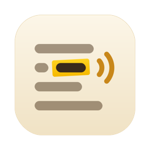

CoReader
Your study buddy reads aloud
CoReader reads your PDFs and EPUBs aloud, highlighting each word as it goes, and keeps your highlights, notes and bookmarks next to the page.
Getting help
Found a problem or have an idea? Open an issue describing what happened, and which device and version of CoReader you're using.
Common questions
How do I open a book? On the Mac, use File › Open or drag a PDF or EPUB onto CoReader. On iPhone and iPad, tap Open and choose a file from Files, or use “Open in CoReader” from the Files app.
What is the neural voice? On the Mac, CoReader can download a natural-sounding voice (about 125 MB) the first time you choose it. It runs entirely on your Mac. You can remove it in Settings at any time.
Can it read scanned pages? On the Mac, CoReader recognizes the text on scanned pages on your device, so they can be read aloud and highlighted too.
Where are my notes kept? On your device, inside CoReader's own storage. Use Export to save them as Markdown or PDF.